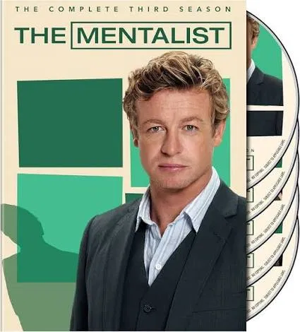

Patrick Jane
Consultor da CBI. Observador, manipulador e muito carismático. Usa psicologia e truques de mentalismo para desvendar casos.
Um ex-falso médium usa observação, psicologia e muito charme para resolver crimes, enquanto caça o assassino da sua família.
Conhecer a série
The Mentalist acompanha Patrick Jane, um consultor da CBI (California Bureau of Investigation) que já se passou por médium na TV. Hoje ele usa a habilidade de ler pessoas para ajudar a polícia a resolver casos, sempre com humor e muita ousadia.
Por trás das tiradas e dos truques, existe uma história pessoal pesada: o criminoso conhecido como Red John assassinou a esposa e a filha de Jane, e encontrá-lo é o que move o personagem.
Consultor da CBI. Observador, manipulador e muito carismático. Usa psicologia e truques de mentalismo para desvendar casos.
Agente sênior e chefe da equipe. Séria e competente, é quem tenta manter Jane dentro das regras.
Agente calado e direto. Fala pouco, mas quase sempre tem a observação mais precisa da equipe.
Agente leal e de bom coração, com um lado romântico que aparece ao longo das temporadas.
Agente inteligente e dedicada, forte em pesquisa e tecnologia dentro da equipe.
O serial killer misterioso que assina seus crimes com um smiley desenhado com sangue. O grande vilão da série.
Cada episódio traz um mistério que prende até o final.
As tiradas de Jane equilibram a tensão dos crimes.
A equipe é carismática e a dinâmica entre eles é ótima.
Escreva aqui o seu episódio ou momento favorito!